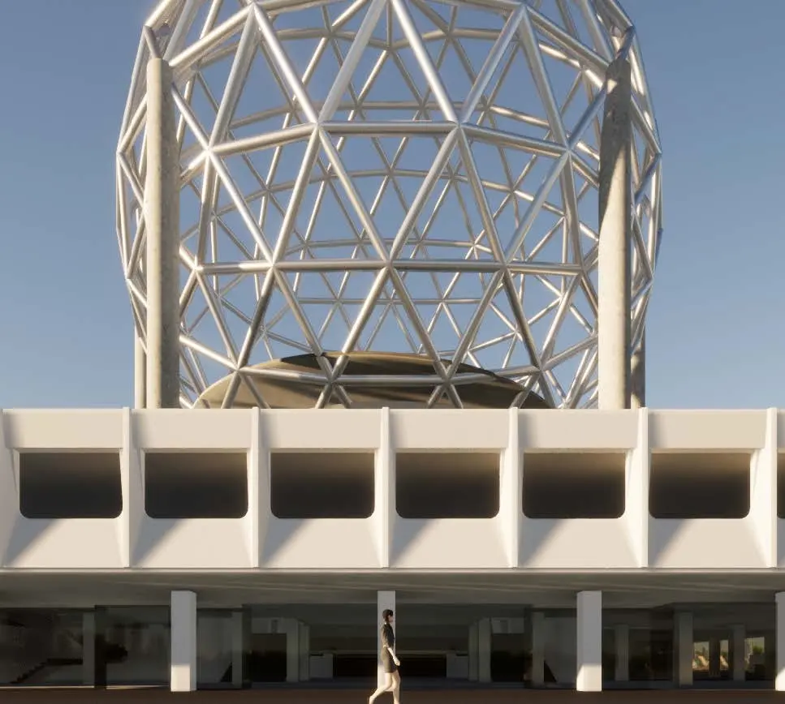
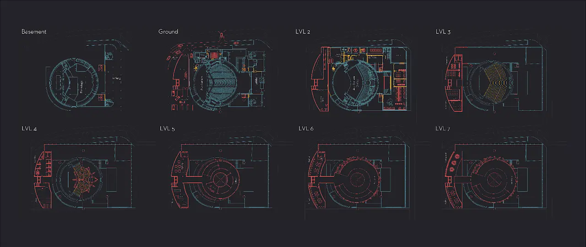
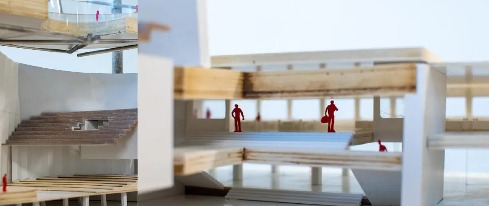
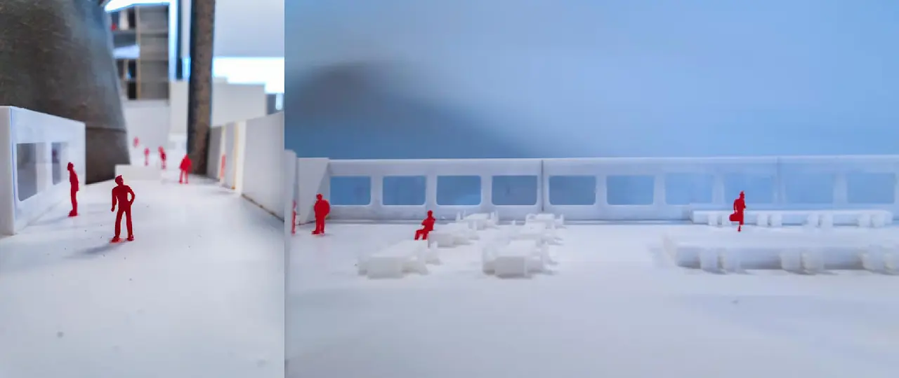
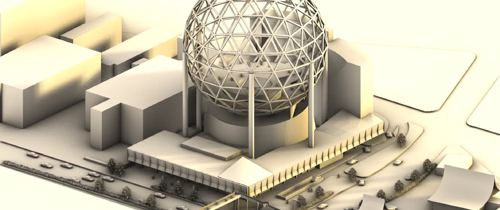

architecture
Gifu Media Sphere

- context
- SUTD Studio
- year
- 2020
- type
- architecture
This project is a proposal for an adaptive reuse for the Gifu Civic Auditorium located in the Gifu Prefecture in Japan. The civic auditorium was designed by Junzo Sakakura, who was the studio chief of Le Corbusier's design studio. It consists of a single truncated cone as the main auditorium and flanked by an L shape structure. The adaptive reuse project proposes the conversion of the auditorium into a satellite school for the Institute of Advanced Media Arts and Sciences (IAMAS) school in the nearby Ogaki city, since Gifu has a rich history of craftsmanship, and the satellite school is situated in the center of a collection of other culturally significant locations sprinkled around the city. This project proposes the addition of a single pure form of a sphere hovering above the truncated cone, which takes the form of a bucky ball and serves the function of a museum space with a giant planetarium style projection on its walls. The auditorium can be used for lectures, and the L shaped structure with its many rooms can be used as classroom spaces. The ball and its accompanying 6 storey structure is publically accessible, allowing the public to view the works by the students, which also allows the students to gain valuable experience by displaying their works publically.






